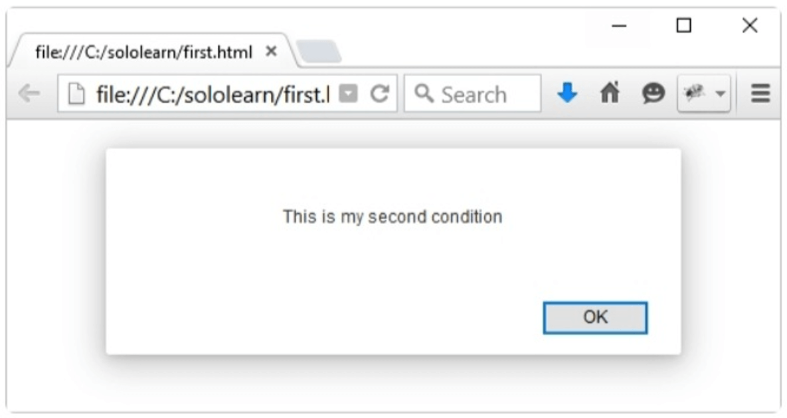
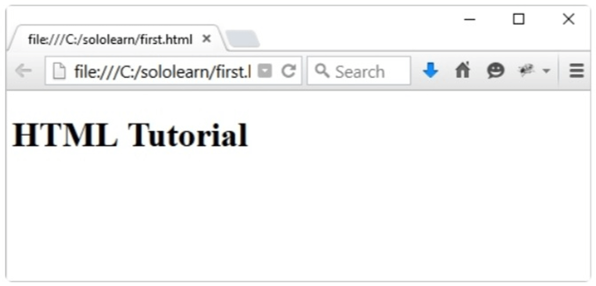
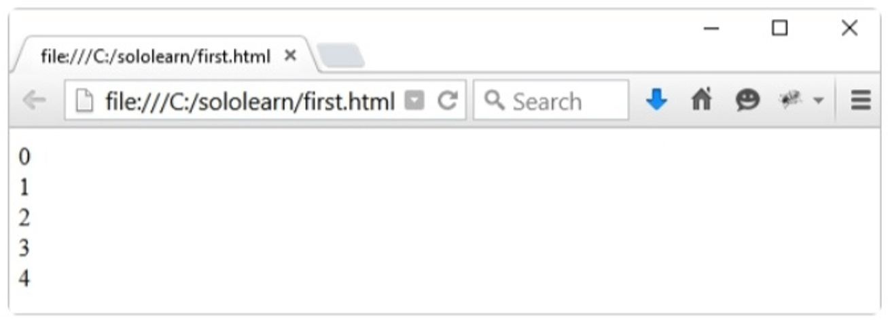

Muy a menudo cuando escribes código, deseas ejecutar diferentes acciones basados en diferentes condiciones.
Puedes realizar esto utilizando declaraciones condicionales en tu código.
Utiliza if para especificar un bloque de código que será ejecutado si una condición específica es verdadera.
if (condition ) {
statements
}
Las declaraciones serán ejecutadas sólo si la condición específica es verdadera.
Ejemplo:
var myNum1 = 7;
var myNum2 = 70;
if (myNum1 < myNum2) {
alert("JavaScript is easy to learn.");
}
Resultado:
Tal y como se ve en el dibujo anterior, el método alert() en JavaScript es utilizado para generar una ventana de alerta emergente que contiene la información contenida entre los paréntesis.
La declaración if
Este es otro ejemplo de una declaración condicional falsa.
var myNum1 = 7;
var myNum2 = 10;
if (myNum1 > myNum2) {
alert("JavaScript is easy to learn.");
}
Como la condición evalúa a falso, la declaración de alerta es omitida y el programa continúa con la línea después de la llave de cierre de la declaración if.
Nota que if está en letras minúsculas. Utilizar letras mayúsculas (lf o IF) generará un error.
Code Coach
La declaración if
La declaración else
Utiliza la declaración else para especificar un bloque de código que será ejecutado si la condición es falsa.
if (expresión) {
// código ejecutado si la condición es verdadera
}
else {
// código ejecutado si la condición es falsa
}
Puedes evitar las llaves {} si tu código bajo la condición sólo contiene un comando.
La declaración else
El siguiente ejemplo demuestra el uso de una declaración lf... else.
var myNum1 = 7;
var myNum2 = 10;
if (myNum1 > myNum2) {
alert("This is my first condition");
} else {
alert("This is my second condition");
}
El ejemplo anterior dice:
- Si myNum 1 es mayor que myNum2, alerta "This is my first condition";
- Si no, alerta "This is my second condition".
El navegador imprimirá la segunda condición, ya que 7 no es mayor que 10.

También existe otra forma de hacerlo utilizando el operador ?: a > b ? alert(a): alert(b).
Code Coach
La declaración if else
La declaración else if
else if
Puedes utilizar la declaración else if para especificar una nueva condición si la primera condición es falsa.
Ejemplo:
var course = 1;
if (course == 1) {
document.write("<h1>HTML Tutorial</h1>");
} else if (course == 2) {
document.write("<h1>CSS Tutorial</h1>");
} else {
document.write("<h1>JavaScript Tutorial</h1>");
}
El código anterior dice:
- SI course es igual que 1, despliega "Tutorial HTML";
- Si no, si course es igual que 2, despliega "Tutorial CSS";
- Si ninguna de las anteriores es verdadera, entonces despliega "Tutorial JavaScript";
course es igual que 1, así que obtenemos el siguiente resultado:

La declaración else final "finaliza" la declaración else if y debería ser escrita siempre después de las declaraciones lf y else lf.
Code Coach
else if
else if
El bloque final else será ejecutado cuando ninguna de las condiciones sean verdadera.
Vamos a cambiar el valor de la variable course de nuestro ejemplo previo.
var course = 3;
if (course == 1) {
document.write("<h1>HTML Tutorial</h1>");
} else if (course == 2) {
document.write("<h1>CSS Tutorial</h1>");
} else {
document.write("<h1>JavaScript Tutorial</h1>");
}
El resultado
Puedes escribir tantas declaraciones else if como necesites.
La declaración switch
Switch
En los casos donde necesitas evaluar múltiples condiciones, utilizar declaraciones if else para cada condición podría no ser la mejor solución.
La declaración switch es utilizada para ejecutar diferentes acciones basadas en diferentes condiciones. Sintaxis:
switch (expresión) {
case n1:
declaraciones
break;
case n2:
declaraciones
break;
default:
declaraciones
}
La expresión switch es evaluada una vez. El valor de la expresión es comparado con los valores de cada case (caso). Si hay una coincidencia, el bloque asociado de código es ejecutado.
Puedes obtener el mismo resultado con múltiples declaraciones if... else, pero la declaración switch es más efectiva en tales situaciones.
La declaración switch
Considera el siguiente ejemplo.
var day = 2;
switch (day) {
case 1:
document.write("Monday");
break;
case 2:
document.write("Tuesday");
break;
case 3:
document.write("Wednesday");
break;
default:
document.write("Another day");
}
Puedes tener tantas declaraciones case como sean necesarias.
La palabra clave break
Cuando el código JavaScript llega a un break, se rompe la secuencia de un bloque switch. Esto detendrá la ejecución de código adicional y evaluaciones de "case" dentro del bloque.
Usualmente, en cada declaración de un case debería ser colocado un break.
Code Coach
La declaración switch
La palabra clave default
La palabra clave default (o por defecto) especifica el código a ejecutar si no hay ninguna coincidencia.
var color = "yellow";
switch(color) {
case "blue":
document.write("This is blue.");
break;
case "red":
document.write("This is red.");
break;
case "green":
document.write("This is green.");
break;
case "orange":
document.write("This is orange.");
break;
default:
document.write("Color not found.");
}
El bloque default puede ser omitido, si no hay necesidad de manejar el caso donde no se encuentren coincidencias.
El bucle For
Bucles
Los bucles pueden ejecutar un bloque de código un número de veces. Son útiles en los casos en que quieras ejecutar el mismo código repetidamente, añadiendo valores diferentes cada vez.
JavaScript tiene tres tipos de bucles: for, while, y do whlle.
El bucle for es usado comúnmente cuando creamos un bucle.
La sintaxis:
for (declaración 1; declaración 2; declaración 3) {
bloque de código a ser ejecutado
}
Declaración 1: es ejecutada antes de que el bucle (el bloque de código) comience.
Declaración 2: determina la condición para ejecutar el bucle (el bloque de código).
Declaración 3: es ejecutada cada vez y después de que el bucle (el bloque de código) ha sido ejecutado.
Como puedes ver, el bucle clásico for tiene tres componentes, o declaraciones.
El bucle For
El ejemplo a continuación crea un bucle for que imprime números del 1 al 5.
for (i = 1; i <= 5; i++) {
document.write(i + "<br>");
}
En este ejemplo, la declaración 1 establece una variable antes de que el bucle comience (var i = 1).
La declaración 2 define la condición para que el bucle for se ejecute (i debe ser menor o igual que 5).
La declaración 3 incrementa el valor (i++) cada vez que el bloque de código en el bucle ha sido ejecutado.
Resultado:
La declaración 1 es opcional, y puede ser omitida, si tus valores son fijados antes que el bucle comience.
var i = 1;
for (; i <= 5; i++) {
document.write(i + "<br>");
}
Adicionalmente, puedes inicializar más de un valor en la declaración 1, usando comas, para separarlos.
for (i = 1, text = ""; i <= 5; i++) {
text = i;
document.write(i + "<br>");
}
ES6 introduce otros tipos de loops for; puedes aprender sobre ellos más adelante en el curso de ES6.
Code Coach
El bucle for
Si la declaración 2 retorna verdadero, el bucle comenzará una y otra vez; si retorna falso, el bucle terminará. La declaración 2 es también opcional.
Si omites la declaración 2, tienes que proveer un break dentro del bucle. De otra forma, el bucle nunca terminaría.
La declaración 3 es utilizada para cambiar la variable inicial. Puede hacer cualquier cosa, incluyendo incrementos negativos (i--), incrementos positivos (i = i + 15), o cualquier otra cosa.
La declaración 3 es también opcional, y puede ser omitida si tú incrementas tus valores dentro del bucle.
var i = 0;
for(; i < 10; ) {
document.write(i);
i++;
}
Puedes tener múltiples bucles for anidados.
El bucle While
El bucle While
El bucle while repite un bloque de código, mientras una condición especificada sea verdadera.
Sintaxis:
while (condición) {
bloque de código
}
La condición puede ser cualquier declaración condicional que retorne verdadero o falso.
El bucle While
Considera el siguiente ejemplo.
var i = 0;
while (i <= 10) {
document.write(i + "<br>");
i++;
}
El bucle continuará siendo ejecutado mientras i sea menor o igual que 10. Cada vez que el bucle se ejecuta, i será incrementada por 1.
Esto desplegará los valores desde 0 hasta 10.
Ten cuidado cuando escribas condiciones. Si una condición siempre es true (verdadera), el ciclo se ejecutará indefinidamente.
Code Coach
El bucle while
Si olvidas incrementar la variable utilizada en la condición, el bucle nunca terminará.
Asegúrate de que la condición en un bloque while eventualmente se vuelva falsa.
El bucle Do...While
El bucle Do...While
El bucle do...while es una variante del bucle while. Este bucle ejecutará el código una vez antes de validar si la condición es verdadera, y entonces se repetirá el bucle mientras la condición sea verdadera.
Sintaxis:
do {
bloque de código
} while (condición);
Nota el punto y coma utilizado al final del bucle do...while.
Ejemplo:
var i = 20;
do {
document.write(i + "<br>");
i++;
}
while (i <= 25);
Esto imprime los número desde 20 hasta 25.
El bucle será siempre ejecutado al menos una vez, aún si la condición es falsa, porque el bloque de código es ejecutado antes de que la condición sea evaluada.
Break y Continue
Break
La declaración break "salta fuera" de un bucle y continúa ejecutando el código posterior al bucle.
for (i = 0; i <= 10; i++) {
if (i == 5) {
break;
}
document.write(i + "<br>");
}
Una vez que i alcance 5, saltará fuera del bucle.

Puedes utilizar la palabra clave return para devolver algún valor inmediatamente desde una función ubicada dentro del bucle. Esto también romperá el loop.
Continue
La declaración continue detiene sólo una iteración en el bucle, y continúa con la siguiente iteración.
for (i = 0; i <= 10; i++) {
if (i == 5) {
continue;
}
document.write(i + "<br>");
}
Resultado:
El valor 5 no es impreso, porque continue salta esa iteración del bucle.